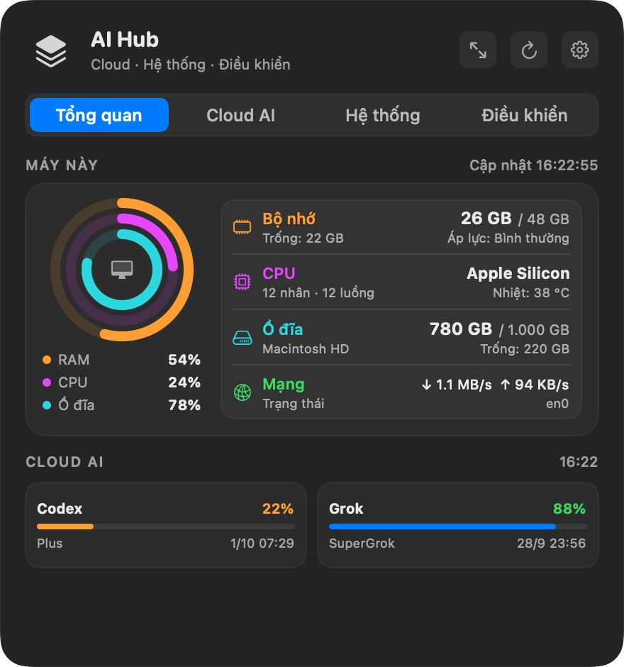
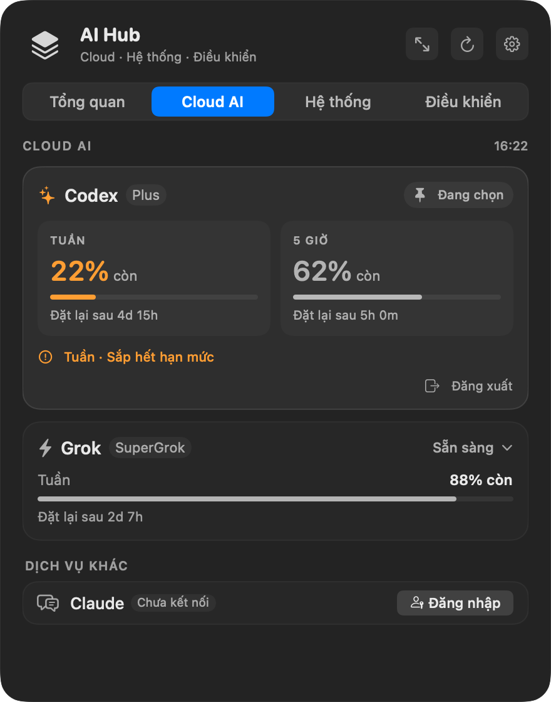
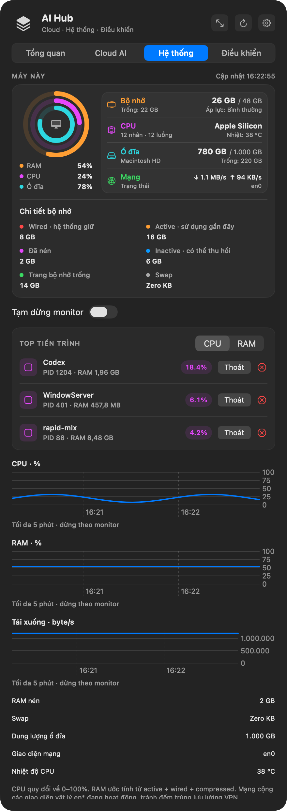
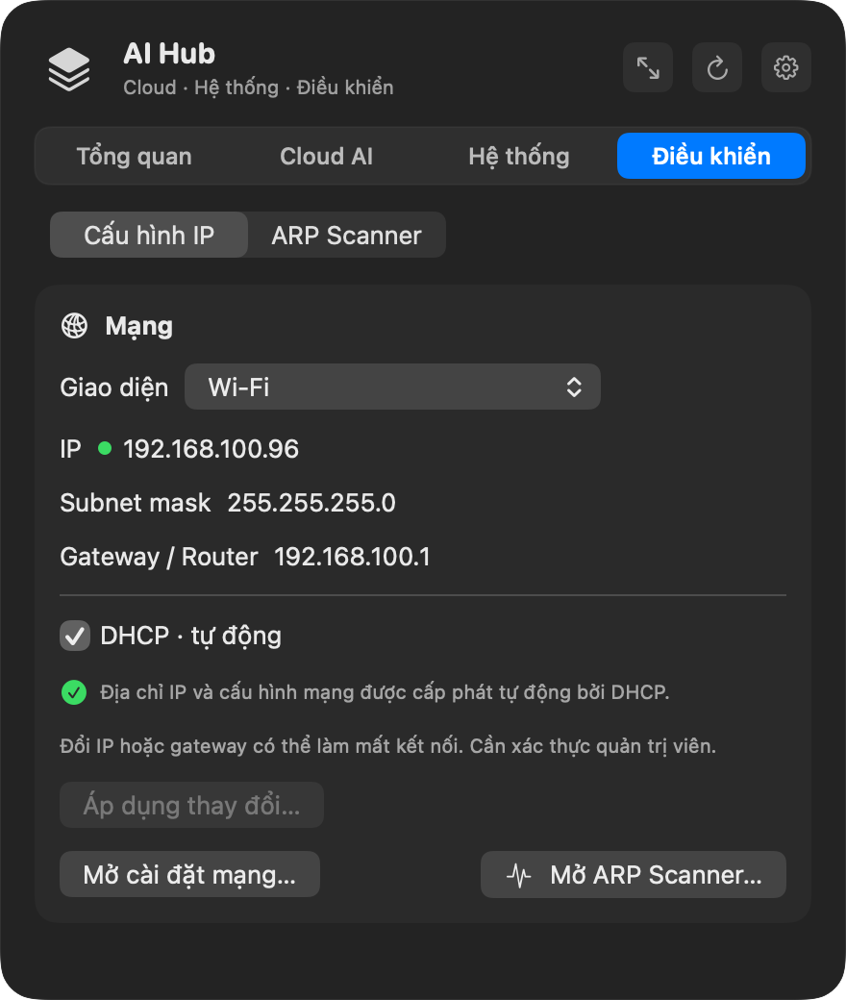
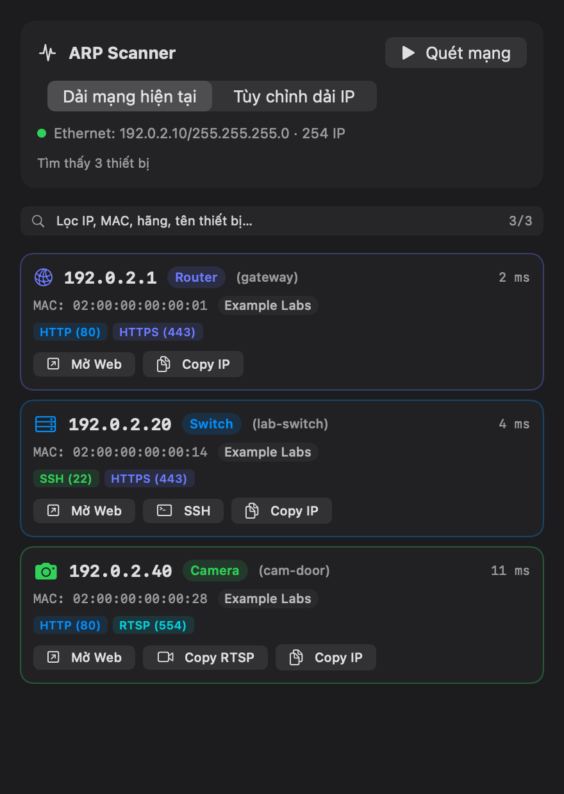

macOS 14 trở lên · Apple Silicon
Bốn tab. Một panel trên menu bar.
Bấm icon AI Hub trên menu bar. Panel có Tổng quan, Cloud AI, Hệ thống và Điều khiển.
Overview
Máy và quota, trên một màn hình.
Ba vòng RAM, CPU và ổ đĩa. Bên cạnh là bộ nhớ đang dùng, tên chip, dung lượng trống và tốc độ mạng. Phía dưới, mỗi tài khoản đã kết nối là một thẻ với phần trăm còn lại. Bấm thẻ để mở Cloud AI.

Cloud AI
Mỗi tài khoản một thẻ. Mỗi hạn mức một hàng.
Codex, Grok, Claude và Antigravity. Thẻ đã kết nối hiện từng cửa sổ, phần trăm còn, và lúc đặt lại. Cửa sổ sắp hết được đánh dấu. Tài khoản chưa kết nối nằm ở nhóm dưới, với nút Đăng nhập.

Hệ thống
Cùng khối máy, cộng những gì đang chiếm máy.
Bộ nhớ tách thành wired, active, đã nén, inactive, trang trống và swap. Năm tiến trình, sắp theo CPU hoặc RAM, có nút Thoát. Ba biểu đồ năm phút: CPU, RAM và tốc độ tải xuống.

Điều khiển
Đặt địa chỉ, hoặc xem ai đang ở trên mạng.
IP: chọn cổng, đọc địa chỉ, mask và gateway. Để DHCP, hoặc tắt đi rồi gõ IP tĩnh và bấm Áp dụng. Scan: quét dải đang dùng. Mỗi máy là một thẻ với IP, MAC, hãng, cổng mở, và nút mở web hoặc copy SSH, RTSP, IP.


Lần mở đầu: Control-click app rồi chọn Open. Nút tải là file DMG mới nhất.